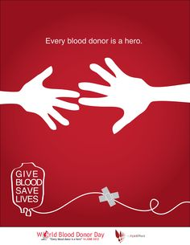

Donantes vivos
Los donantes vivos deben ser mayores de 18 , estar sanos y encontrarse en plenas facultades fisicas y mentales. Un medico diferente del que se encargara de la extraccion del organo donado debe certificar que el donante esta sano.
La extraccion del organo no debe suponer un perjuicio grave para la salud del donante ni poner en peligro su vida.
Entre el acto de la donacion y la extraccion del organo donado deben transcurrir al menos 24 horas para que el donante pueda pensar con tranquilidad en lo que esta haciendo.
La extraccion de organos procedentes de donantes vivos solo podra realizarse en los centros sanitarios expresamente autorizados para ello por la autoridad sanitaria de la comunidad autonoma correspondiente.
Debera facilitarse al donante vivo asistencia sanitaria para su restablecimiento.

Donantes muertos
En el caso de los menores de edad y los incapacitados la autorizacion de la donacion corresponde a sus padres o tutores.
El Servicio de Admisiones de los centros donde se realizan trasplantes dispone de un registro en el que debe constar si el enfermo acepta o no donar sus organos.
Para la extraccion de un organo para donacion es necesario que se haya certificado la muerte del donante bien por parada cardiorrespiratoria o por muerte encefalica o cerebral.
Condiciones del receptor
El trasplante debe mejorar sustancialmente las condiciones de vida del enfermo receptor del organo.
Es necesario determinar previamente la compatibilidad inmunologica de donante y receptor para evitar el rechazo del organo trasplantado.
El receptor del trasplante o sus representantes legales han de recibir informacion detallada sobre la operacion y sobre los riesgos y las probabilidades de exito de la misma.
El receptor del trasplante debe dar su consentimiento por escrito.